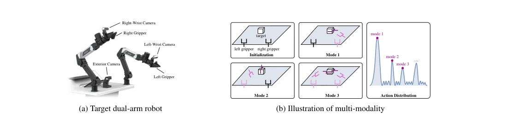
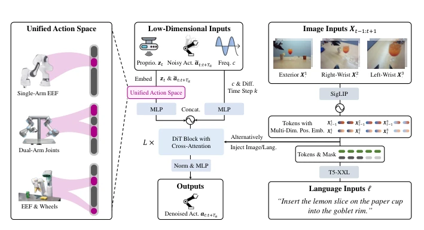
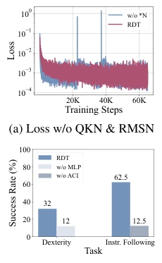
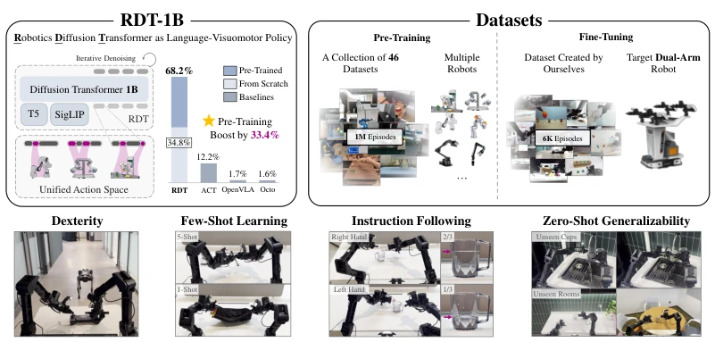
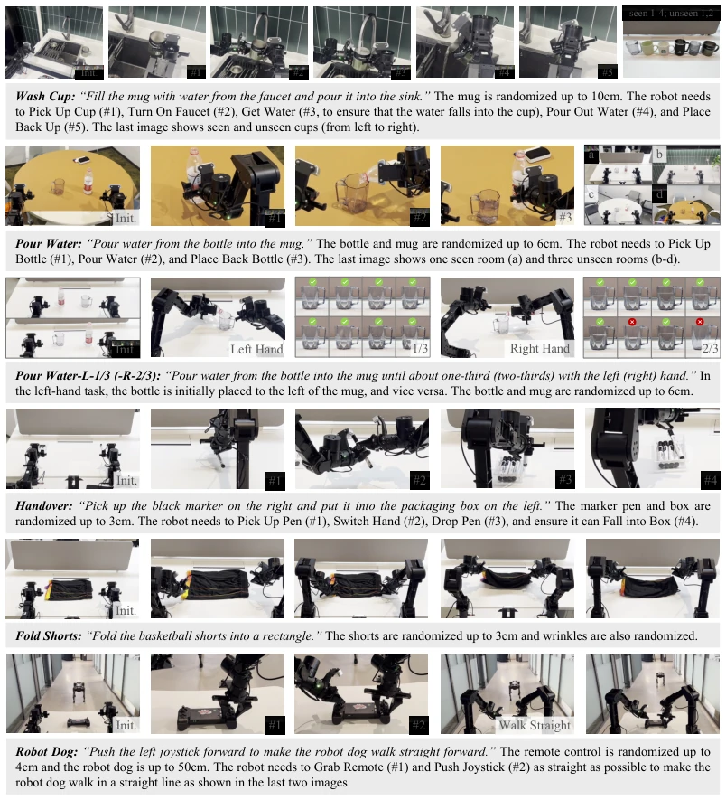
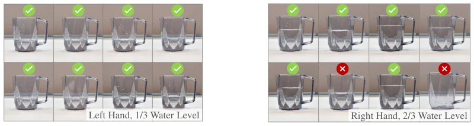
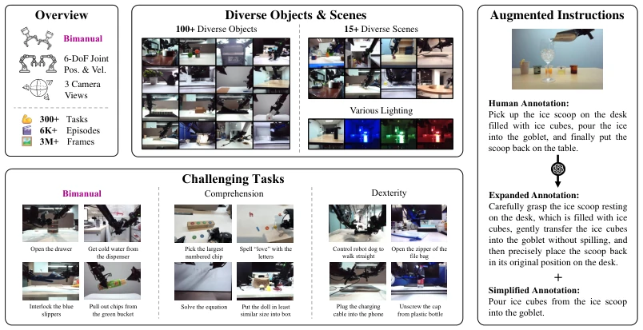
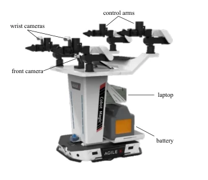
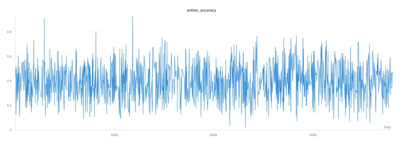
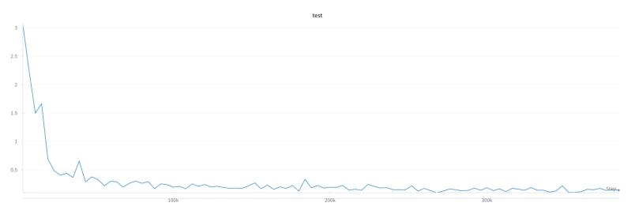

This paper attempts to solve the foundation model challenge for dual-arm manipulation using a 1B parameter diffusion model; the scale is indeed staggering, with 1M data pre-training plus 6K fine-tuning, sounding like it aims to dominate. However, the term "foundation model" is somewhat overused now; RDT's core contribution actually lies in that "physically interpretable unified action space," which is quite clever, aligning actions across different robots, otherwise multi-robot pre-training would be a disaster. However, it still relies on specific hardware like ALOHA for fine-tuning, and the cost to generalize to real robots remains high. Although the results are SOTA, the training cost of 1B parameters is simply discouraging for ordinary laboratories, belonging to the "rich man's game." Additionally, while zero-shot generalization to unseen scenes is impressive, many task designs are "pouring water," "folding clothes," still far from the true complex real world. Overall, it is very solid in engineering and has highlights in theory, but do not expect it to enter your kitchen tomorrow.
研究动机Motivation
双臂操作在机器人领域至关重要，但发展基础模型面临双重挑战：数据稀缺和架构局限。双臂系统硬件成本高昂，导致数据收集极其困难 (Sharma et al., 2018)，这与基础模型数据饥渴的本质冲突。现有方法要么依赖特定任务原语 (Mirrazavi Salehian et al., 2017)，要么局限于小规模模型和简单任务 (Krebs et al., 2021; Zhao et al., 2023)，泛化能力窄。特别是双臂动作空间加倍，导致多模态动作分布 (Li, 2006; Jia et al., 2024)，现有扩散策略难以有效表达。此外，不同机器人物理结构和动作空间的异构性引发数据异质性，可能导致负迁移 (Pan & Yang, 2009)。现有方案要么丢弃结构不一致的机器人，要么仅保留跨机器人不变特征 (Brohan et al., 2023; Ghosh et al., 2023)，牺牲了多样性。因此，需要一种能统一动作表示并捕捉多模态分布的架构。
Dual-arm manipulation is crucial in the robotics field, but developing foundation models faces dual challenges: data scarcity and architectural limitations. Dual-arm system hardware costs are high, leading to extremely difficult data collection (Sharma et al., 2018), which conflicts with the data-hungry nature of foundation models. Existing methods either rely on specific task primitives (Mirrazavi Salehian et al., 2017), or are limited to small-scale models and simple tasks (Krebs et al., 2021; Zhao et al., 2023), with narrow generalization capabilities. Especially with dual-arm action space doubling, leading to multimodal action distributions (Li, 2006; Jia et al., 2024), existing diffusion policies struggle to express effectively. Furthermore, the heterogeneity of different robot physical structures and action spaces triggers data heterogeneity, potentially causing negative transfer (Pan & Yang, 2009). Existing solutions either discard robots with inconsistent structures or only retain cross-robot invariant features (Brohan et al., 2023; Ghosh et al., 2023), sacrificing diversity. Therefore, an architecture capable of unifying action representation and capturing multimodal distributions is needed.

Figure 2: (a) Schematic diagram of the ALOHA dual-arm robot. (b) A toy example of grasping a cube. Compared with unimanual manipulation, bimanual manipulation has more possible action modes, leading to stronger multi-modality. Colors from light to dark indicate that time goes forward.
The overall process is divided into multi-robot pre-training and target robot fine-tuning. First, construct a physically interpretable unified action space, embedding actions from different robots into a unified vector, preserving physical meaning, supporting cross-robot pre-training. The model architecture is based on Diffusion Transformer (DiT), with three key modifications made for robot data characteristics: 1) QKNorm & RMSNorm: Solve gradient problems caused by unstable numerical ranges of robot physical quantities, avoid breaking symmetry by centering the time series; 2) MLP Decoder: Replace linear decoder, enhance fitting capability for non-linear dynamics and fine manipulation; 3) Alternating Condition Injection (ACI): Solve the problem of text information being drowned due to differences in image and text token counts, inject alternately to balance modalities. Pre-training uses 46 datasets totaling 1M+ trajectories, fine-tuning uses a self-built 6K+ dual-task dataset.

Figure 3: RDT framework. Heterogeneous action spaces of various robots are embedded into a unified action space for multi-robot training. Inputs: proprioception zt, noisy action chunk ˜at:t+Ta, control frequency c, and diffusion time step k, acting as denoising inputs; image inputs (Timg = 2 and X· = {X1 · , X2 · , X3 · } denotes a set of images from exterior, right-wrist, and left wrist cameras) and language inputs, acting as conditions. Outputs: denoised action chunk at:t+Ta.

Figure 4: (a) Unstable loss curve during training without QKNorm & RMSNorm. (b) Success rates of RDT (w/o MLP Decoder or w/o ACI) in tasks of Robot Dog (walk straight sub-task) and Pour Water-L-1/3 (correct amount sub- task). See Fig. 5 for task defini- tions. All the models are with- out pre-training in this experiment due to resource constraints.
Evaluated 7 challenging tasks on ALOHA dual robotic arms, including unseen objects, scenes, instruction following, few-shot learning, and dexterity manipulation. Baselines include ACT, OpenVLA, Octo. The main metric is success rate. Results show RDT zero-shot generalization on unseen objects and scenes is significantly better than baselines, pouring water task can precisely control water volume (1/3 or 2/3). Few-shot learning (Handover 5-shot, Fold Shorts 1-shot) performance is excellent, while baselines are nearly zero. In dexterity tasks (controlling robot dog), RDT can accurately push the rod. Ablation experiments show that large model scale, large-scale pre-training, and diffusion modeling are indispensable. Especially pre-training is crucial for unseen scene generalization, RDT (scratch) performs poorly.

Figure 1: Overview of Robotics Diffusion Transformer with 1B-Parameters (RDT-1B), a language-conditioned visuomotor policy for bimanual manipulation,with state-of-the-art generaliz- ability to unseen scenarios (See App. H for metric calculation details).

Figure 5: Task definitions and visualizations. For 7 challenging tasks, we describe their language instruction, randomization, and definitions of each sub-task. For Pour Water-L-1/3 and Pour Water-R- 2/3, we show the resulting water levels in two images.

Figure 10: Visulization of the resulting water levels across 8 trails in Pour Water-L-1/3 and Pour Water-R-2/3. Left: The water level completed by RDT in each trial is extremely close to the ground- truth 1/3 standard. Right: RDT made one mistake in pouring (empty cup) and one mistake in water level, but the other trials were in roughly good agreement with 2/3.
其他图片Other Figures

Figure 6: Fine-Tuning dataset. Our dataset includes the following key features: (1) Diverse Objects and Scenes. Our dataset contains objects with different properties manipulated in different scenes and conditions. (2) Challenging Tasks. Our dataset incorporates dexterous manipulation, language and vision comprehension, and bimanual tasks. (3) Multi-Modal Features. Our dataset is annotated with rich multi-modal data, including 3-View RGB cameras, joint information, and augmented instructions.

Figure 7: Hardware features.

Figure 8: The accuracy of action token prediction fluctuates rather than converges with the number of training steps when fine-tuning OpenVLA with the full fine-tuning dataset.

Figure 9: The test MSE of action prediction fluctuates rather than converges with the number of training steps when fine-tuning Octo with the full fine-tuning dataset.